| Participante | Idade | Sexo | Topico | Velocidade | Aplicação | Nota |
|---|---|---|---|---|---|---|
| 1 | 22 | Feminino | Bio | X1 | Diagn | 1 |
| 1 | 22 | Feminino | Bio | X1 | Imed | 4 |
| 1 | 22 | Feminino | Bio | X1 | Semn | 4 |
| 2 | 20 | Feminino | Bio | X1 | Diagn | 3 |
| 2 | 20 | Feminino | Bio | X1 | Imed | 5 |
| 2 | 20 | Feminino | Bio | X1 | Semn | 5 |
| 3 | 21 | Feminino | Bio | X1 | Diagn | 2 |
| 3 | 21 | Feminino | Bio | X1 | Imed | 5 |
| 3 | 21 | Feminino | Bio | X1 | Semn | 5 |
| 4 | 19 | Masculino | Bio | X1 | Diagn | 2 |
| 4 | 19 | Masculino | Bio | X1 | Imed | 4 |
| 4 | 19 | Masculino | Bio | X1 | Semn | 4 |
| 5 | 21 | Feminino | Bio | X1 | Diagn | 1 |
| 5 | 21 | Feminino | Bio | X1 | Imed | 3 |
| 5 | 21 | Feminino | Bio | X1 | Semn | 3 |
| 6 | 19 | Masculino | Bio | X1 | Diagn | 1 |
| 6 | 19 | Masculino | Bio | X1 | Imed | 4 |
| 6 | 19 | Masculino | Bio | X1 | Semn | 4 |
| 7 | 19 | Masculino | Bio | X1 | Diagn | 2 |
| 7 | 19 | Masculino | Bio | X1 | Imed | 5 |
| 7 | 19 | Masculino | Bio | X1 | Semn | 5 |
| 8 | 21 | Masculino | Bio | X2 | Diagn | 1 |
| 8 | 21 | Masculino | Bio | X2 | Imed | 4 |
| 8 | 21 | Masculino | Bio | X2 | Semn | 3 |
| 9 | 20 | Masculino | Bio | X2 | Diagn | 1 |
| 9 | 20 | Masculino | Bio | X2 | Imed | 4 |
| 9 | 20 | Masculino | Bio | X2 | Semn | 3 |
| 10 | 22 | Masculino | Bio | X2 | Diagn | 1 |
| 10 | 22 | Masculino | Bio | X2 | Imed | 2 |
| 10 | 22 | Masculino | Bio | X2 | Semn | 1 |
| 11 | 23 | Masculino | Bio | X2 | Diagn | 2 |
| 11 | 23 | Masculino | Bio | X2 | Imed | 4 |
| 11 | 23 | Masculino | Bio | X2 | Semn | 5 |
| 12 | 20 | Masculino | Bio | X2 | Diagn | 2 |
| 12 | 20 | Masculino | Bio | X2 | Imed | 5 |
| 12 | 20 | Masculino | Bio | X2 | Semn | 5 |
| 13 | 21 | Feminino | Mat | X1 | Diagn | 0 |
| 13 | 21 | Feminino | Mat | X1 | Imed | 4 |
| 13 | 21 | Feminino | Mat | X1 | Semn | 5 |
| 14 | 26 | Masculino | Mat | X1 | Diagn | 1 |
| 14 | 26 | Masculino | Mat | X1 | Imed | 2 |
| 14 | 26 | Masculino | Mat | X1 | Semn | 1 |
| 15 | 26 | Masculino | Mat | X1 | Diagn | 2 |
| 15 | 26 | Masculino | Mat | X1 | Imed | 5 |
| 15 | 26 | Masculino | Mat | X1 | Semn | 5 |
| 16 | 20 | Masculino | Mat | X1 | Diagn | 0 |
| 16 | 20 | Masculino | Mat | X1 | Imed | 4 |
| 16 | 20 | Masculino | Mat | X1 | Semn | 4 |
| 17 | 23 | Masculino | Mat | X1 | Diagn | 0 |
| 17 | 23 | Masculino | Mat | X1 | Imed | 4 |
| 17 | 23 | Masculino | Mat | X1 | Semn | 3 |
| 18 | 20 | Feminino | Mat | X2 | Diagn | 1 |
| 18 | 20 | Feminino | Mat | X2 | Imed | 4 |
| 18 | 20 | Feminino | Mat | X2 | Semn | 5 |
| 19 | 23 | Masculino | Mat | X2 | Diagn | 2 |
| 19 | 23 | Masculino | Mat | X2 | Imed | 2 |
| 19 | 23 | Masculino | Mat | X2 | Semn | 4 |
| 20 | 19 | Masculino | Mat | X2 | Diagn | 1 |
| 20 | 19 | Masculino | Mat | X2 | Imed | 5 |
| 20 | 19 | Masculino | Mat | X2 | Semn | 5 |
| 21 | 20 | Masculino | Mat | X2 | Diagn | 1 |
| 21 | 20 | Masculino | Mat | X2 | Imed | 3 |
| 21 | 20 | Masculino | Mat | X2 | Semn | 3 |
| 22 | 21 | Masculino | Mat | X2 | Diagn | 0 |
| 22 | 21 | Masculino | Mat | X2 | Imed | 2 |
| 22 | 21 | Masculino | Mat | X2 | Semn | 3 |
Impacto do conteúdo e da velocidade de vídeos na retenção de informação a curto e a longo prazo - Planejamento e análise do experimento
Resumo
Este projeto descreve um experimento randomizado para avaliar o efeito da velocidade de reprodução (VR) de vídeos educativos e do conteúdo do vídeo (CV) sobre a retenção imediata e tardia (memória de prazo intermediário e de longo prazo) de informação em estudantes de graduação da área de exatas. O delineamento combina dois fatores fixos (CV: Matemática ou Biologia; VR: 1x ou 2x) e prevê medidas repetidas (teste imediato e reteste após 1 semana). Apresentam-se neste documento os objetivos, justificativa teórica, desenho experimental, plano de coleta e procedimentos de análise estatística, além de considerações éticas e orçamento estimado. São apresentadas as conclusões da análise e considerações importantes sorbe os métodos utilizados, suas limitações e passos futuros.
Introdução
A educação mediada por vídeos (videoaulas) tornou-se uma prática central no ensino superior. Estudantes comumente recorrem ao aumento na velocidade de reprodução (VR) como estratégia para economizar tempo [1]. A literatura sugere efeitos variados: enquanto aumentos moderados (e.g. até 1.5x) frequentemente não prejudicam a compreensão, velocidades mais altas (e.g. 2x) podem reduzir o desempenho em testes imediatos e/ou retardados, possivelmente por aumentar a carga cognitiva ou comprometer a codificação profunda do material [1], [2], [3].
Além da VR, o conteúdo do vídeo (CV) e o interesse do aprendiz pelo tópico podem modular a atenção e a retenção [4]. Nosso estudo investiga se a interação entre VR e CV afeta a retenção imediata e tardia — isto é, retenção na memória de prazo intermediário e de longo prazo, respectivamente — em estudantes de exatas, com atenção especial ao fato de que conteúdos mais alinhados ao interesse dos estudantes (conteúdos voltados a ciências exatas) podem mitigar os efeitos negativos da aceleração.
Objetivo Geral
Avaliar o efeito da velocidade de reprodução (1x ou 2x) e do conteúdo do vídeo (Matemática ou Biologia) na retenção imediata e tardia (após uma semana) de informações em estudantes de graduação da área de ciências exatas.
Objetivos Específicos
- Avaliar o efeito da velocidade de reprodução elevada (2x) na retenção, comparando-o com a velocidade normal (1x).
- Investigar a influência do conteúdo do vídeo (Matemática ou Biologia) na retenção da informação.
- Verificar a existência de efeito de interação entre o conteúdo do vídeo e a velocidade de reprodução sobre a retenção.
- Testar a hipótese de que o conteúdo de Matemática (mais alinhado ao perfil dos participantes) atenua o eventual efeito negativo da velocidade de reprodução acelerada (2x) na retenção.
Metodologia
Optamos por um delineamento experimental inteiramente casualizado e fatorial completo: \(2\times 2\) com medidas repetidas no tempo (teste imediato e reteste uma semana depois). As unidades experimentais são participantes individuais, cada participante é alocado a uma única combinação (tratamento) dos fatores CV e VR e realiza o teste em dois tempos. Será utilizada como variável resposta o desempenho em um teste, medido como pontuação de 0 até 5 acertos, aplicado nos estudantes sobre o CV, e uma medida da retenção, calculada a partir da diferença entre as pontuações no teste imediato e no reteste. Dois formulários serão utilizados para cada CV, totalizando quatro formulários. Covariáveis como idade, sexo e nota em uma avaliação diagnóstica preliminar serão coletadas para enriquecer a análise.
Os indivíduos selecionados para o experimento são todos os estudantes matriculados na disciplina MAE0316 - Planejamento e Análise de Experimentos, oferecida no segundo semestre de 2025 no Instituto de Matemática e Estatística da Universidade de São Paulo (IME-USP) que não são autores ou estiveram envolvidos no planejamento deste experimento. Por estarem matriculados na matéria, não será necessário que assinem um termo de consentimento ou um aval do Comitê de Ética em Pesquisa (CEP), como acordado em sala.
A coleta ocorrerá em sala de aula para o primeiro formulário e via e-mail para o segundo formulário, uma semana depois.
Formulário 1
O primeiro formulário consistirá de três seções: triagem, vídeo e teste.
Na primeira seção, será perguntado a idade, sexo, curso do participante e e-mail para identificação e contato durante todo o experimento. Os participantes serão orientados a anotarem o e-mail inserido. Ademais, será apresentado o tópico do vídeo, escolhido aleatoriamente entre “Matemática: Potência de Ponto” e “Biologia: Transcrição e Tradução”. Será mensurado o grau de conhecimento prévio do participante com um pré-teste, contendo duas questões relacionadas ao tema do vídeo e outras duas questões distratoras.
A segunda seção é composta pelo vídeo e instruções de como assisti-lo (sem realizar anotações, evitando pausas, sem assisti-lo novamente e na velocidade indicada). O vídeo será passado em sala por projetor e sob supervisão dos coletores.
A terceira seção consiste num teste de múltipla escolha (5 (cinco) alternativas) e 5 (cinco) questões em ordem aleatorizada para cada respondente para avaliar a proporção de acertos. Os participantes são informados que um segundo teste será aplicado em uma semana, é solicitado que não busquem mais informações sobre o assunto no meio tempo. Não será informado que se tratará do mesmo teste.
Formulário 2
O segundo formulário consistirá apenas de duas seções: triagem e teste. Será enviado aos participantes via e-mail uma semana após a aplicação do primeiro.
Na primeira seção, será perguntando o e-mail usado no primeiro formulário para identificação das respostas. Também será perguntado se o participante viu algum material sobre o vídeo assistido desde então.
A segunda seção consistirá do mesmo teste aplicado no formulário 1, com questões em ordem mais uma vez aleatorizada. O participante será orientado a não buscar manter consistência entre as respostas dos formulários, apenas a marcar o que acredita ser verdade.
Técnicas e procedimentos
As questões dos testes e dos pré-testes serão retiradas dos vestibulares de ingresso em universidades públicas estaduais e federais que mantiveram o sistema de ingresso com vestibular próprio (e.g. Universidade Estadual do Rio de Janeiro, Universidade Federal do Rio Grande do Sul, Universidade Federal de Santa Catarina, Universidade Estadual do Ceará) ou produzidas conforme os moldes das questões dos vestibulares supracitados. Cada pergunta possui apenas uma alternativa correta.
Os vídeos foram selecionados, pois apresentam tempo de duração semelhantes (8 minutos e 32 segundos para o vídeo de Matemática e 9 minutos e 58 segundos para o vídeo de Biologia) e tiveram avaliações muito positivas nos comentários e no sistema de avaliação nativo da plataforma de vídeos Youtube, os likes.
Serão excluídas as observações dos participantes que relatarem pausa ou consulta externa durante o vídeo, os que foram expostos a conteúdos relacionados ao teste no período entre testes ou não completarem o reteste no prazo de 48h.
Levando-se em consideração que todos os participantes do experimento são voluntários e os softwares usados para aplicar o formulário e a análise de dados (software estatístico R) são gratuitos, não se prevê custo associado à realização do experimento. Preliminarmente, será realizada uma análise exploratória e descritiva dos dados, com a construção de boxplots das variáveis envolvidas e outros gráficos pertinentes, como o gráfico de perfis de médias, e o cálculo de medidas de dispersão e de tendência central.
Analisaremos a retenção, definida a partir da diferença entre as notas na primeira e na segunda aplicação. Também, analisaremos individualmente o desempenho na primeira e na segunda aplicação por tratamento.
Para cada uma das três análises (retenção, nota na primeira aplicação e nota na segunda aplicação), será ajustado um modelo linear simples com efeitos fixos para fatores CV e VR, além de variáveis como idade, sexo e nota na avaliação diagnóstica. Com nossas variáveis respostas, não será possível que ajustemos modelos de efeito misto para considerar variações intrínsecas entre os participantes. Caso os modelos não satisfaçam suposições da regressão linear, serão exploradas abordagens não paramétricas, como métodos de permutação.
A partir da análise dos dados, será elaborado um relatório com todos os resultados do experimento, com uma descrição detalhada do passo a passo seguido e da comparação entre o que se esperava e o que se obteve. O relatório será redigido por intermédio da ferramenta Quarto. Por fim, os resultados obtidos serão apresentados para os estudantes da classe e um vídeo informativo com os resultados deste e outros experimentos será produzido.
Embasamento teórico
Murphy et al. [1] demonstram que velocidades moderadas, como 1.25x e 1.5x, não prejudicam significativamente o desempenho em testes imediatos de compreensão. Entretanto, VR superiores a 1.5x apresentam impacto negativo na retenção de conteúdo, especialmente quando avaliada após um intervalo de tempo. Resultados semelhantes são reportados pela meta-análise conduzida por Tharumalingam et al. [3] que indica que velocidades iguais ou superiores a 2x geram quedas consistentes de desempenho, associadas ao aumento da demanda cognitiva.
Esses fenômenos podem ser explicados pela Teoria da Carga Cognitiva, proposta por Sweller e colaboradores [5], segundo a qual a aprendizagem é limitada pela capacidade de processamento da memória de trabalho. O aumento excessivo da VR sobrecarrega esse sistema, elevando a carga extrínseca e reduzindo a capacidade do estudante de integrar novas informações ao conhecimento prévio. Estudos clássicos como os de Foulke e Sticht [6] já apontavam que a compreensão auditiva diminui conforme a taxa de apresentação da fala aumenta, fundamentando teoricamente os prejuízos observados com VR elevadas.
Por outro lado, efeitos positivos do aumento moderado da VR também são apontados na literatura. Murphy et al. [2] argumentam que a apresentação levemente acelerada pode reduzir episódios de mind wandering (divagação mental), mantendo o engajamento e aumentando a eficiência do estudo. Além da VR, o interesse do participante no conteúdo do vídeo (CV) também tem papel relevante na retenção. McIntyre et al. [4] demonstram que tópicos percebidos como atraentes ou relevantes geram maior retenção e desempenho em avaliações posteriores, sugerindo que o fator motivacional influencia diretamente os resultados de aprendizagem.
Considerando essas evidências, o presente estudo investigará não apenas o efeito isolado da VR, mas também sua interação com o conteúdo dos vídeos. Além disso, a avaliação da memória será realizada imediatamente e após uma semana, conforme proposto por Murphy et al. [1], permitindo analisar tanto retenção da memória de prazo intermediário quanto de longo prazo, conforme o modelo de memória Atkinson-Shiffrin [7] e suas extensões [8].
Tratamento de Dados
Transformamos nossos dados em uma tabela longa para facilitar a análise longitudinal. Criamos a variável “Retenção”, que mede relativamente a retenção de informação dos participantes entre a primeira e segunda aplicação do teste. Sua forma está dada na Equação 1.
\[ \mathrm{Retenção} = 1 + \frac{\text{Nota na reaplicação} - \text{Nota na aplicação}}{5} \tag{1}\]
Disso, segue que uma retenção de \(0\) indica que o participante acertou tudo na aplicação, e errou todas as questões na reaplicação, indicando perda total do que aprendeu com os vídeos. Por outro lado, uma retenção de 1 indica que o participante acertou o mesmo número de questões, enquanto uma retenção maior que 1 indica que o participante teve um desempenho melhor na reaplicação, o que pode indicar efeito de aprendizagem tardio, exposição ao conteúdo fora do experimento, ou acaso.
Análise Exploratória
| Aplicação | media | dp | min | Q1 | mediana | Q3 | max |
|---|---|---|---|---|---|---|---|
| Diagn | 1.2273 | 0.8125 | 0 | 1.00 | 1 | 2.00 | 3 |
| Imed | 3.8182 | 1.0527 | 2 | 3.25 | 4 | 4.75 | 5 |
| Semn | 3.8636 | 1.2458 | 1 | 3.00 | 4 | 5.00 | 5 |
| Grupo | n | media | dp | min | Q1 | mediana | Q3 | max |
|---|---|---|---|---|---|---|---|---|
| Bio-X1 | 7 | 1.00 | 0.0000 | 1.0 | 1.0 | 1.0 | 1.0 | 1.0 |
| Bio-X2 | 5 | 0.92 | 0.1789 | 0.8 | 0.8 | 0.8 | 1.0 | 1.2 |
| Mat-X1 | 5 | 0.96 | 0.1673 | 0.8 | 0.8 | 1.0 | 1.0 | 1.2 |
| Mat-X2 | 5 | 1.16 | 0.1673 | 1.0 | 1.0 | 1.2 | 1.2 | 1.4 |
| Grupo | media | dp | min | Q1 | mediana | Q3 | max |
|---|---|---|---|---|---|---|---|
| Bio-X1-Diagn | 1.7143 | 0.7559 | 1 | 1 | 2 | 2 | 3 |
| Bio-X1-Imed | 4.2857 | 0.7559 | 3 | 4 | 4 | 5 | 5 |
| Bio-X1-Semn | 4.2857 | 0.7559 | 3 | 4 | 4 | 5 | 5 |
| Bio-X2-Diagn | 1.4000 | 0.5477 | 1 | 1 | 1 | 2 | 2 |
| Bio-X2-Imed | 3.8000 | 1.0954 | 2 | 4 | 4 | 4 | 5 |
| Bio-X2-Semn | 3.4000 | 1.6733 | 1 | 3 | 3 | 5 | 5 |
| Mat-X1-Diagn | 0.6000 | 0.8944 | 0 | 0 | 0 | 1 | 2 |
| Mat-X1-Imed | 3.8000 | 1.0954 | 2 | 4 | 4 | 4 | 5 |
| Mat-X1-Semn | 3.6000 | 1.6733 | 1 | 3 | 4 | 5 | 5 |
| Mat-X2-Diagn | 1.0000 | 0.7071 | 0 | 1 | 1 | 1 | 2 |
| Mat-X2-Imed | 3.2000 | 1.3038 | 2 | 2 | 3 | 4 | 5 |
| Mat-X2-Semn | 4.0000 | 1.0000 | 3 | 3 | 4 | 5 | 5 |
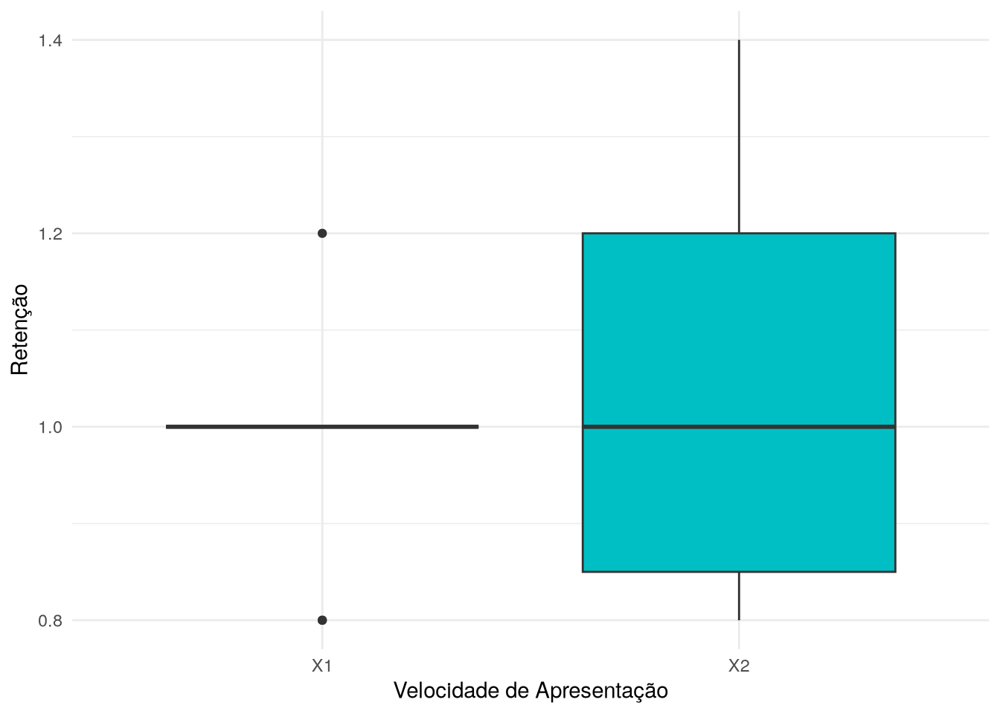
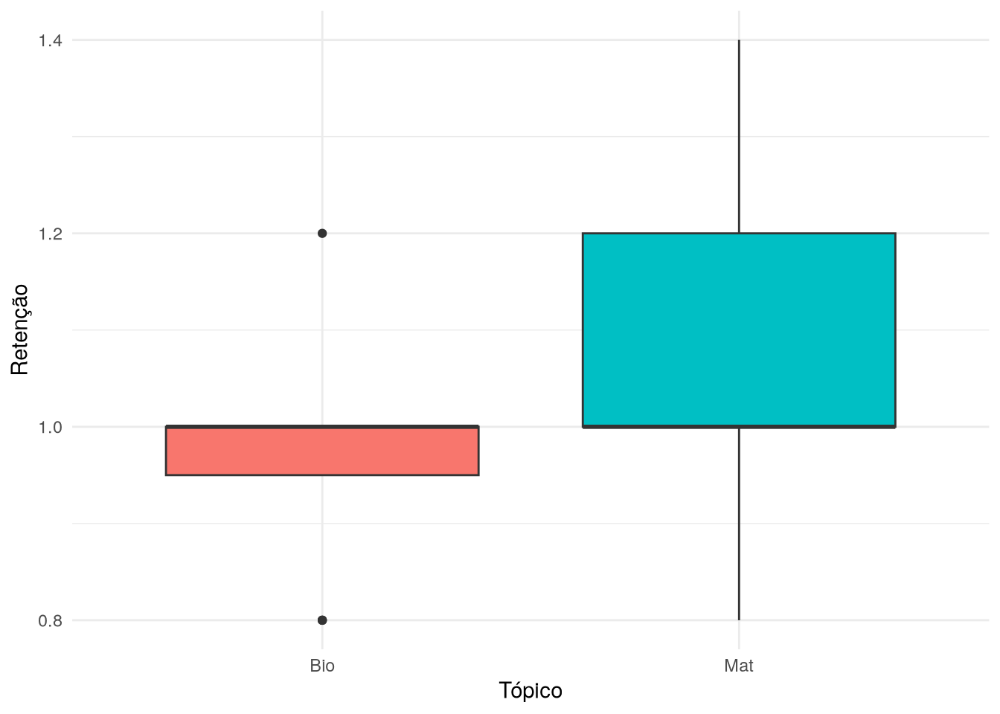
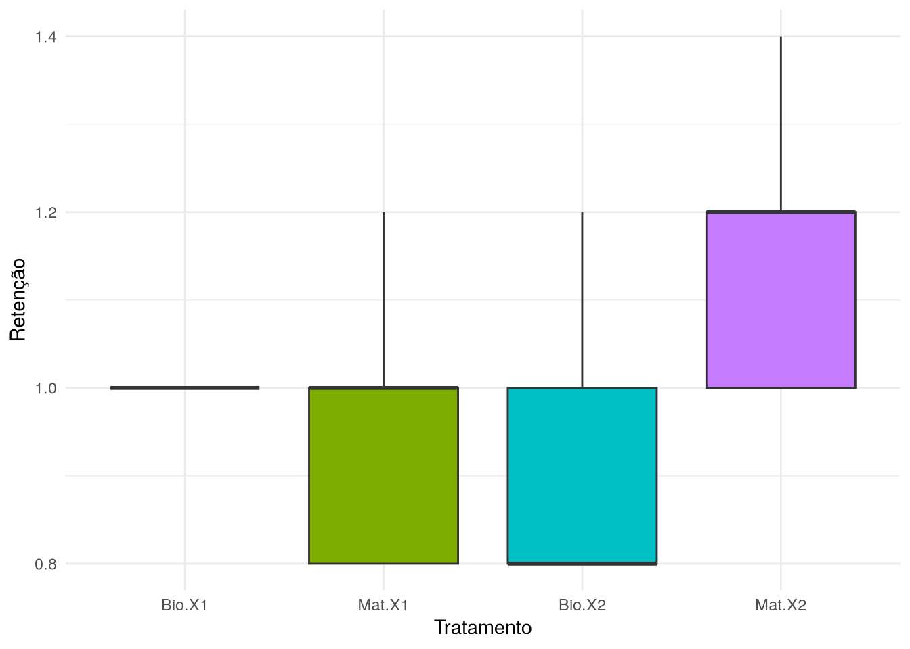
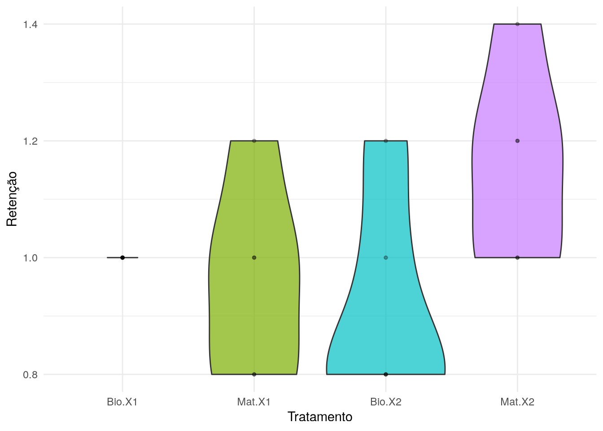
Observamos destes gráficos que pode haver diferença entre os tratamentos, apesar de, individualmente, o boxplot de velocidades apresentar pouca variação na retenção.
Analisaremos os gráficos de perfis na Figura 5 para observar variações entre os participantes ao longo das aplicações do teste.
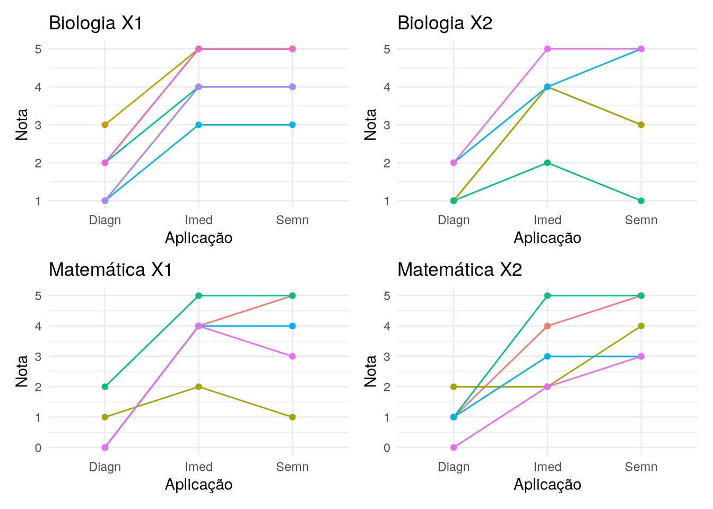
Analisamos a partir da primeira aplicação do teste (Imed), uma vez que estamos preocupados em modelar a retenção. Além da interpretação biológica e social, esperamos pelos gráficos na Figura 5 que há efeito aleatório no intercepto e coeficiente angular. Os gráficos apontam, porém, que esses valores podem não estar correlacionados.
Também é interessante observar a covariância entre as variáveis explicativas.
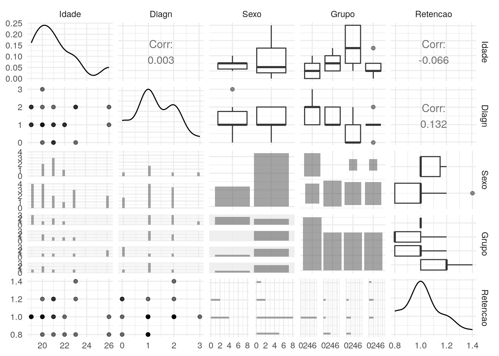
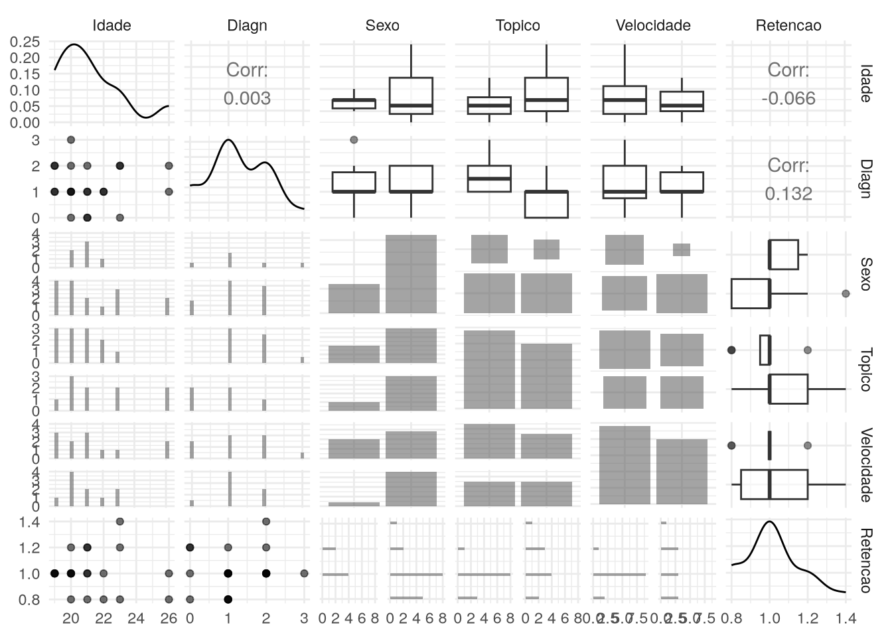
Modelagem por Velocidade e Conteúdo
Nesta seção, modelaremos os dados considerando os fatores separadamente: tópico e velocidade. Queremos investigar os efeitos principais e a interação entre esses fatores na retenção de informação dos participantes.
Modelagem da Retenção
Temos como objetivo modelar a retenção de informação dos participantes a partir das variáveis explicativas disponíveis: idade, sexo, desempenho no teste diagnóstico, velocidade e conteúdo.
Devido ao caráter discreto da variável resposta, provavelmente um modelo linear clássico não será adequado na modelagem. Ainda assim, tentaremos ajustar um modelo linear só com efeitos fixos, depois, prosseguiremos para métodos não paramétricos, se necessário.
Modelo linear simples
Ajustamos um modelo linear simples com efeitos fixos para a retenção da idade, tópico, velocidade da apresentação e a nota na aplicação diagnóstica. Incluiremos inicialmente interação entre idade e tópico, idade e velocidade, velocidade e tópico e idade e diagnóstico.
| Estimate | Std. Error | t value | Pr(>|t|) | |
|---|---|---|---|---|
| (Intercept) | 2.176 | 0.9457 | 2.301 | 0.03859 |
| Diagn | -0.6012 | 0.4376 | -1.374 | 0.1928 |
| Idade | -0.0601 | 0.04468 | -1.345 | 0.2016 |
| VelocidadeX2 | -2.222 | 0.6813 | -3.262 | 0.006187 |
| TopicoMat | 0.5437 | 0.7893 | 0.6888 | 0.503 |
| Diagn:Idade | 0.03106 | 0.02035 | 1.527 | 0.1508 |
| Idade:VelocidadeX2 | 0.1017 | 0.03268 | 3.113 | 0.008244 |
| Idade:TopicoMat | -0.02109 | 0.03615 | -0.5835 | 0.5696 |
| VelocidadeX2:TopicoMat | 0.1887 | 0.1197 | 1.577 | 0.1389 |
| Observations | Residual Std. Error | \(R^2\) | Adjusted \(R^2\) |
|---|---|---|---|
| 22 | 0.1073 | 0.711 | 0.5331 |
Após seleção das variáveis por stepwise bidirecional, terminamos com fatores velocidade, nota no teste diagnóstico, idade, tópico, interação entre idade e diagnóstico, entre tópico e velocidade e entre velocidade e idade. Ou seja, removemos apenas a interação entre tópico e idade.
| Estimate | Std. Error | t value | Pr(>|t|) | |
|---|---|---|---|---|
| (Intercept) | 2.555 | 0.6714 | 3.805 | 0.00193 |
| Diagn | -0.6571 | 0.4168 | -1.577 | 0.1372 |
| Idade | -0.07786 | 0.03192 | -2.439 | 0.02865 |
| VelocidadeX2 | -2.291 | 0.655 | -3.498 | 0.003551 |
| TopicoMat | 0.0871 | 0.1008 | 0.8645 | 0.4019 |
| Diagn:Idade | 0.03325 | 0.01952 | 1.703 | 0.1106 |
| Idade:VelocidadeX2 | 0.1055 | 0.03127 | 3.373 | 0.00455 |
| VelocidadeX2:TopicoMat | 0.1992 | 0.1155 | 1.725 | 0.1066 |
| Observations | Residual Std. Error | \(R^2\) | Adjusted \(R^2\) |
|---|---|---|---|
| 22 | 0.1048 | 0.7034 | 0.5551 |
Diagnóstico do modelo linear simples
Iniciamos com análise dos resíduos do modelo ajustado.
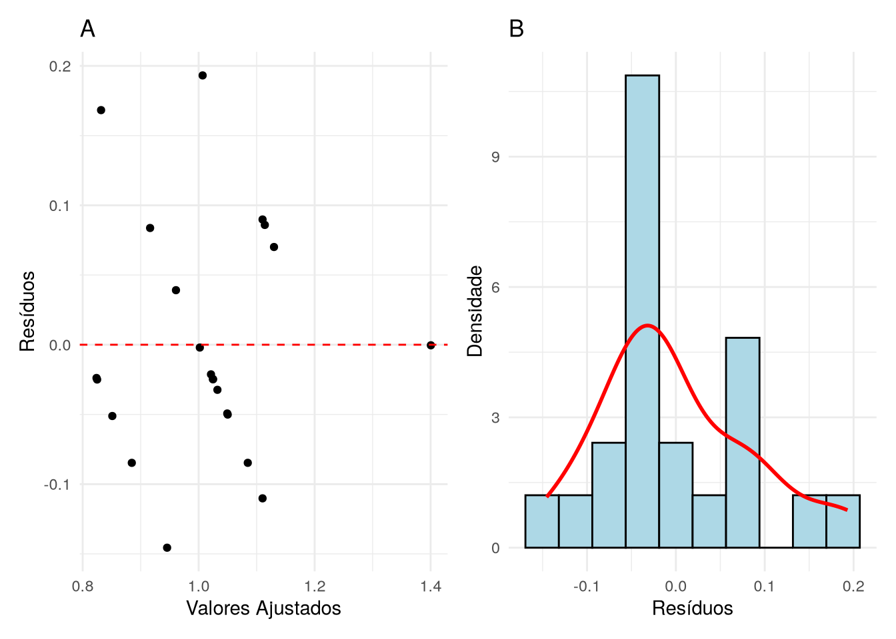
Os resíduos na Figura 8, gráfico A, apresentam certo padrão (linhas diagonais) no gráfico de resíduos vs valores ajustados, indicando possível violação da suposição de homocedasticidade. O histograma do gráfico B sugere uma distribuição quase unimodal, mas limitada pelo caráter discreto da variável resposta.
Primeiramente, aplicamos o teste de Levene para avaliar a homocedasticidade dos resíduos, agrupando pela interação entre tópico e velocidade.
| Estatística | Valor-p |
|---|---|
| 1.0457 | 0.3964 |
O valor \(p\) elevado no teste de Levene na Tabela 7 indica que não há evidências para rejeitarmos a hipótese nula de homocedasticidade dos resíduos a \(5\%\) de significância estatística.
Partimos para análise da normalidade por QQ-plot e o teste de Shapiro-Wilk.
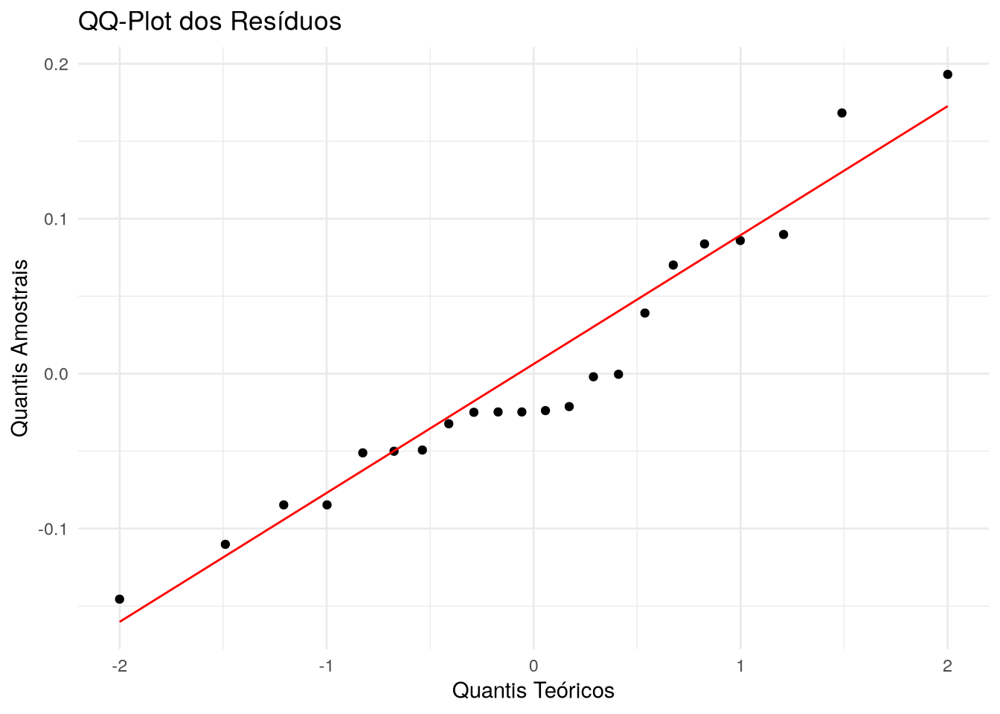
O QQ-plot na Figura 9 apresenta um padrão que se repetirá ao longo dos modelos ajustados: os resíduos dificilmente seguiriam a linha de referência, já que não se tratam de uma variável contínua. Ainda assim, não há desvios extremos, e seguiremos com o teste numérico de normalidade.
| Estatística | Valor-p |
|---|---|
| 0.9413 | 0.2107 |
O valor \(p\) elevado no teste de Shapiro-Wilk na Tabela 8 indica que não rejeitamos a hipótese nula de normalidade dos resíduos ao nível de significância usual de 5%. Apesar disso, devemos ter cautela na interpretação, dado o tamanho reduzido da amostra e a natureza discreta da variável resposta.
Com normalidade não rejeitada, seguimos para o teste de Bartlett.
| Estatística | Valor-p |
|---|---|
| 4.7794 | 0.1887 |
Novamente, não rejeitamos a homocedasticidade dos resíduos. Portanto, podemos dizer que, de forma geral, as suposições do modelo linear clássico são satisfeitas, mas devemos manter ressalvas por conta da análise gráfica dos resíduos.
Análise da diferença entre grupos
Iniciamos a análise em busca da diferença entre os grupos com a ANOVA de Tipo I.
| Df | Sum Sq | Mean Sq | F value | Pr(>F) | |
|---|---|---|---|---|---|
| Diagn | 1 | 0.009067 | 0.009067 | 0.826 | 0.3788 |
| Idade | 1 | 0.002257 | 0.002257 | 0.2056 | 0.6572 |
| Velocidade | 1 | 0.01698 | 0.01698 | 1.547 | 0.234 |
| Topico | 1 | 0.1116 | 0.1116 | 10.16 | 0.006577 |
| Diagn:Idade | 1 | 0.04788 | 0.04788 | 4.362 | 0.05549 |
| Idade:Velocidade | 1 | 0.1441 | 0.1441 | 13.13 | 0.002768 |
| Velocidade:Topico | 1 | 0.03265 | 0.03265 | 2.975 | 0.1066 |
| Residuals | 14 | 0.1537 | 0.01098 | NA | NA |
Pelo resultado da ANOVA de Tipo I na Tabela 10, o Tópico e interação entre Idade e Velocidade são significativos, após controlarem pelas respectivas variáveis e covariáveis.
Via Médias Marginais Ajustadas (EMMeans), do pacote emmeans, podemos investigar as comparações entre os níveis dos fatores Tópico e Velocidade. Iniciaremos pelo tópico, utilizando a média entre velocidades. Isso é feito através de um teste \(t\) para a diferença entre as médias ajustadas. Caso a interação fosse significativa, deveríamos considerar se há diferença por nível do fator velocidade. Como não é o caso, consideramos a média entre velocidades.
| Comparação | Estimativa | EP | df | T-Ratio | p-Valor |
|---|---|---|---|---|---|
| Bio - Mat | -0.1867 | 0.0648 | 14 | -2.8817 | 0.0121 |
Para ambas velocidades (interação não significativa), o tópico de Biologia apresenta retenção menor (\(-0.1867\)) que o tópico de Matemática, com diferença significativa ao nível de 5% (\(p = 0.0121\)).
Modelagem por Tratamento
Aqui, agruparemos os dados por tratamento, ou seja, combinando o tópico e a velocidade em uma única variável categórica com quatro níveis: “Mat-X1”, “Mat-X2”, “Bio-X1” e “Bio-X2”. Queremos comparar esses grupos diretamente nas análises e contrastar os resultados com a seção anterior. Iremos também empregar métodos não paramétricos para as análises, além de analisarmos individualmente as notas na primeira e segunda aplicação do teste.
Modelagem da Retenção
Temos como objetivo modelar a retenção de informação dos participantes a partir das variáveis explicativas disponíveis: idade, sexo, desempenho no teste diagnóstico e grupo/tratamento (tópico e velocidade).
Devido ao caráter discreto da variável resposta, provavelmente um modelo linear clássico não será adequado na modelagem. Ainda assim, tentaremos ajustar um modelo linear só com efeitos fixos, depois, prosseguirmos para métodos não paramétricos, se necessário.
Modelo linear simples
Ajustamos um modelo linear simples com efeitos fixos para a retenção da idade, tópico, velocidade da apresentação e a nota na aplicação diagnóstica. Iniciaremos por um modelo envolvendo idade, nota na avaliação diagnóstica e o tratamento (grupo), assim como a interação entre idade e grupo e entre diagnóstico e idade.
| Estimate | Std. Error | t value | Pr(>|t|) | |
|---|---|---|---|---|
| (Intercept) | 1.644 | 1.033 | 1.591 | 0.1375 |
| Diagn | -0.5695 | 0.4317 | -1.319 | 0.2117 |
| Idade | -0.03464 | 0.04893 | -0.708 | 0.4925 |
| GrupoBio-X2 | -1.117 | 1.147 | -0.9743 | 0.3491 |
| GrupoMat-X1 | 1.251 | 0.9788 | 1.278 | 0.2255 |
| GrupoMat-X2 | -1.389 | 1.086 | -1.279 | 0.2252 |
| Idade:GrupoBio-X2 | 0.04857 | 0.05509 | 0.8815 | 0.3953 |
| Idade:GrupoMat-X1 | -0.05423 | 0.04522 | -1.199 | 0.2536 |
| Idade:GrupoMat-X2 | 0.07559 | 0.05265 | 1.436 | 0.1767 |
| Diagn:Idade | 0.03004 | 0.02005 | 1.498 | 0.1599 |
| Observations | Residual Std. Error | \(R^2\) | Adjusted \(R^2\) |
|---|---|---|---|
| 22 | 0.1057 | 0.7414 | 0.5475 |
Após seleção das variáveis pelos testes \(t\), terminamos com o modelo sem intercepto, com os efeitos fixos dos grupos e a interação entre idade e grupo.
Precisamos tirar o intercepto e refazer o modelo para conseguirmos interpretar o efeito dos grupos, que não foram significativos quando analisamos com o intercepto.
| Estimate | Std. Error | t value | Pr(>|t|) | |
|---|---|---|---|---|
| GrupoBio-X1 | 1 | 0.8025 | 1.246 | 0.2332 |
| GrupoBio-X2 | -0.5765 | 0.9639 | -0.5981 | 0.5593 |
| GrupoMat-X1 | 1.683 | 0.4977 | 3.382 | 0.004472 |
| GrupoMat-X2 | -0.9 | 0.8057 | -1.117 | 0.2828 |
| GrupoBio-X1:Idade | -4.805e-17 | 0.03978 | -1.208e-15 | 1 |
| GrupoBio-X2:Idade | 0.07059 | 0.0454 | 1.555 | 0.1423 |
| GrupoMat-X1:Idade | -0.03117 | 0.02133 | -1.461 | 0.166 |
| GrupoMat-X2:Idade | 0.1 | 0.03903 | 2.562 | 0.02258 |
| Observations | Residual Std. Error | \(R^2\) | Adjusted \(R^2\) |
|---|---|---|---|
| 22 | 0.1184 | 0.9914 | 0.9865 |
Devido aos altos valores \(p\) para os coeficientes ajustados, decidimos também por comparar esse modelo com uma forma reduzida (sem interação) por ANOVA.
| Res.Df | RSS | Df | Sum of Sq | F | Pr(>F) |
|---|---|---|---|---|---|
| 18 | 0.352 | NA | NA | NA | NA |
| 14 | 0.1962 | 4 | 0.1558 | 2.779 | 0.06849 |
Com diferença não significativa entre os modelos, optamos por seguir com o modelo reduzido pelo princípio da parcimônia. Dessa forma, nos resta o modelo apenas com os efeitos fixos dos grupos. Apresentamos um sumário na Tabela 15.
| Estimate | Std. Error | t value | Pr(>|t|) | |
|---|---|---|---|---|
| GrupoBio-X1 | 1 | 0.05285 | 18.92 | 2.507e-13 |
| GrupoBio-X2 | 0.92 | 0.06254 | 14.71 | 1.785e-11 |
| GrupoMat-X1 | 0.96 | 0.06254 | 15.35 | 8.753e-12 |
| GrupoMat-X2 | 1.16 | 0.06254 | 18.55 | 3.522e-13 |
| Observations | Residual Std. Error | \(R^2\) | Adjusted \(R^2\) |
|---|---|---|---|
| 22 | 0.1398 | 0.9846 | 0.9812 |
O valor elevado de \(\bar{R}^2\) não nos diz muito neste modelo sem intercepto. Precisamos realizar um diagnóstico do modelo para verificar as suposições do modelo linear clássico.
Diagnóstico do modelo linear simples
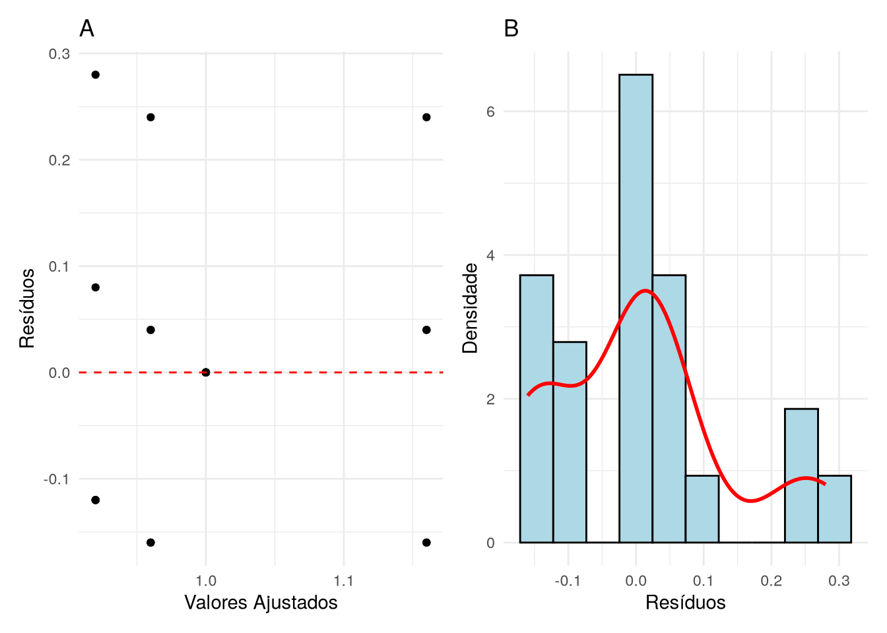
Os resíduos mostram-se demasiadamente positivos no gráfico A da Figura 10 e um “funil reverso”, enquanto o histograma do gráfico B aponta certa irregularidade.
| Estatística | Valor-p |
|---|---|
| 1.8409 | 0.1759 |
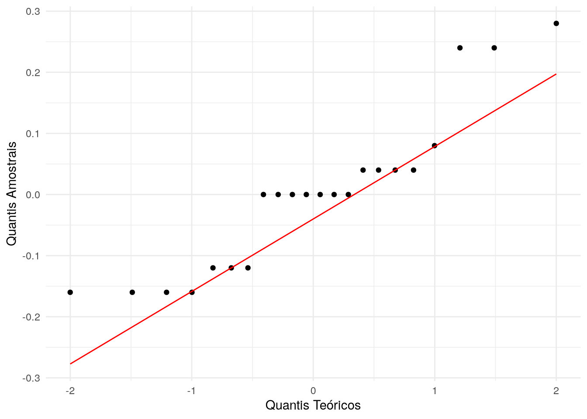
Pelo gráfico na Figura 11, os resíduos, claramente, não seguem distribuição normal. Isso é esperado pela natureza discreta da variável resposta somado a uma amostra pequena. Vamos, ainda assim, realizar o teste de Shapiro-Wilk para fins exploratórios.
| Estatística | Valor-p |
|---|---|
| 0.8761 | 0.0102 |
Curiosamente, não rejeitaríamos a uma confiança de \(99\%\). Ainda assim, sob nossos critérios (\(\alpha = 5\%\)), e a análise da forma dos dados, rejeitamos a normalidade dos resíduos e descartamos esse modelo.
Métodos não paramétricos
Dado o diagnóstico do modelo linear simples, optamos por ajustar um modelo não paramétrico para os dados através da permutação, considerando que temos um modelo com delineamento completamente aleatorizado pela professora, usaremos um teste de aleatorização (permutação) para testar a hipótese de que há efeito do grupo no valor médio da retenção.
[1] "Settings: unique SS "
Call:
lmp(formula = Retencao ~ 0 + Grupo, data = df_grupos)
Residuals:
Min 1Q Median 3Q Max
-1.600e-01 -1.200e-01 1.101e-16 4.000e-02 2.800e-01
Coefficients:
Estimate Iter Pr(Prob)
GrupoBio-X1 1.00 5000 0.0010 ***
GrupoBio-X2 0.92 196 0.3418
GrupoMat-X1 0.96 5000 0.0074 **
GrupoMat-X2 1.16 5000 <2e-16 ***
---
Signif. codes: 0 '***' 0.001 '**' 0.01 '*' 0.05 '.' 0.1 ' ' 1
Residual standard error: 0.1398 on 18 degrees of freedom
Multiple R-Squared: 0.9846, Adjusted R-squared: 0.9812
F-statistic: 288.5 on 4 and 18 DF, p-value: 4.687e-16 Analysis of Variance Table
Response: Retencao
Df R Sum Sq R Mean Sq Iter Pr(Prob)
(Intercept) 4 22.568 5.6420 5000 4e-04 ***
Residuals 18 0.352 0.0196
---
Signif. codes: 0 '***' 0.001 '**' 0.01 '*' 0.05 '.' 0.1 ' ' 1Vemos pelas Tabela 18 e Tabela 19 que há efeito significativo do grupo na retenção dos participantes, pelo valor F. Prosseguiremos com a análise pelo teste de Kruskal-Wallis para detectar diferença entre o efeito desses grupos.
| Estatística | Valor-p |
|---|---|
| 6.2899 | 0.0983 |
O teste de Kruskal-Wallis não rejeita a hipótese nula de que as amostras entre os grupos se originam da mesma distribuição. Pode ser também que o teste de KW tenha pouca adequação pela grande quantidade de empates na variável resposta. Dessa forma, pode ser que pela variabilidade distinta entre os grupos observadas na análise descritiva (Tabela 3), a análise do método com permutação seja inválida.
Prosseguiremos mesmo assim com a análise post-hoc, por curiosidade.
Usaremos o teste post-hoc de Dunn para identificar quais grupos diferem entre si.
| Comparação | Estatística | Valor-p ajustado |
|---|---|---|
| Bio-X1 - Bio-X2 | 1.0156 | 1.0000 |
| Bio-X1 - Mat-X1 | 0.5223 | 1.0000 |
| Bio-X2 - Mat-X1 | -0.4567 | 1.0000 |
| Bio-X1 - Mat-X2 | -1.5378 | 0.7445 |
| Bio-X2 - Mat-X2 | -2.3640 | 0.1085 |
| Mat-X1 - Mat-X2 | -1.9073 | 0.3389 |
Corroborando o resultado do teste KW, o teste de Dunn não aponta diferenças significativas entre os grupos, mas, como dito, a análise pode ser prejudicada pela grande quantidade de empates na variável resposta. Dessa forma, estamos podemos dizer que não há evidências suficientes para afirmar que há diferenças na retenção entre os tratamentos.
Conclusões da modelagem sobre a retenção
A partir dos modelos ajustados, é inconclusivo se há diferenças significativas na retenção de informação entre os diferentes tratamentos com os métodos utilizados. Isso ocorre devido à forma discreta da variável resposta e a pequena amostra, que dificultam o ajuste de modelos adequados. Mas, há indícios de que não há diferenças entre os tratamentos.
Nesse contexto, seguiríamos com a análise através de transformações, como a tranformação Logit com a probabilidade de retenção, ou o uso de modelos lineares generalizados, como o modelo logístico para uma outra forma da variável retenção, ou até mesmo modelos binomiais, buscando uma análise mais robusta.
Modelagem das Notas na Aplicação Imediata
Com um modelo inconclusivo para a retenção, partimos para a modelagem das notas na primeira avaliação. Com isso, buscamos levantar considerações sobre diferenças entre tratamentos na memória de prazo intermediário [8]. Vamos repetir o processo como feito com a análise interior, levando em consideração as mesmas limitações.
Modelo linear simples
Ajustamos um modelo linear simples com efeitos fixos para a nota na aplicação diagnóstica, idade, tópico e velocidade da apresentação, assim como as interações entre idade e grupo e entre diagnóstico e idade.
| Termo | Estimativa | Erro Padrão | Valor t | Valor-p |
|---|---|---|---|---|
| (Intercept) | 7.3198 | 6.8796 | 1.0640 | 0.3083 |
| Diagn | -2.4897 | 2.8746 | -0.8661 | 0.4034 |
| Idade | -0.2165 | 0.3258 | -0.6644 | 0.5190 |
| GrupoBio-X2 | 11.4862 | 7.6360 | 1.5042 | 0.1584 |
| GrupoMat-X1 | 8.6277 | 6.5179 | 1.3237 | 0.2103 |
| GrupoMat-X2 | 19.0322 | 7.2333 | 2.6312 | 0.0219 |
| Idade:GrupoBio-X2 | -0.5563 | 0.3669 | -1.5163 | 0.1553 |
| Idade:GrupoMat-X1 | -0.3525 | 0.3011 | -1.1705 | 0.2645 |
| Idade:GrupoMat-X2 | -0.9529 | 0.3506 | -2.7179 | 0.0187 |
| Diagn:Idade | 0.1632 | 0.1335 | 1.2220 | 0.2452 |
Selecionamos as variáveis pelos testes \(t\), restando o modelo com grupo, idade, interação idade-grupo e diagnóstico-idade. Dessa vez, não precisamos retirar o intercepto por exisitr efeitos significativos dos grupos. Isso facilitará a interpretação posteriormente.
| Termo | Estimativa | Erro Padrão | Valor t | Valor-p |
|---|---|---|---|---|
| (Intercept) | 3.1277 | 4.8417 | 0.6460 | 0.5295 |
| GrupoBio-X2 | 11.5946 | 7.5612 | 1.5334 | 0.1491 |
| GrupoMat-X1 | 9.9352 | 6.2794 | 1.5822 | 0.1376 |
| GrupoMat-X2 | 19.8656 | 7.0997 | 2.7981 | 0.0151 |
| GrupoBio-X1:Idade | -0.0243 | 0.2363 | -0.1028 | 0.9197 |
| GrupoBio-X2:Idade | -0.5827 | 0.2709 | -2.1510 | 0.0509 |
| GrupoMat-X1:Idade | -0.4316 | 0.1537 | -2.8087 | 0.0148 |
| GrupoMat-X2:Idade | -1.0098 | 0.2420 | -4.1727 | 0.0011 |
| Idade:Diagn | 0.0480 | 0.0125 | 3.8468 | 0.0020 |
Comparamos via ANOVA com um modelos reduzidos.
| Res.Df | RSS | Df | Sum of Sq | F | Pr(>F) |
|---|---|---|---|---|---|
| 18 | 19.83 | NA | NA | NA | NA |
| 13 | 6.313 | 5 | 13.52 | 5.566 | 0.005876 |
Pela Tabela 24, permanecemos com o modelo com interações. Prosseguimos para o diagnóstico do modelo.
Diagnóstico do modelo linear simples
Primeiro, para análise dos resíduos.
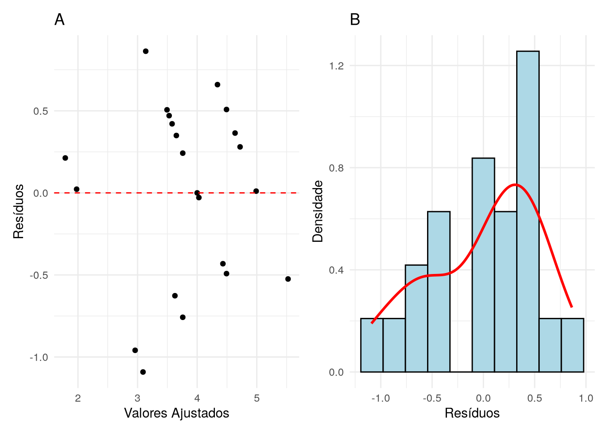
Os resíduos mostram-se demasiadamente, em quantidade, positivos no gráfico A da Figura 12, enquanto o histograma do gráfico B aponta irregularidade.
| Estatística | Valor-p |
|---|---|
| 0.6042 | 0.6207 |
Pela Tabela 25, não rejeitamos a hipótese nula de homocedasticidade dos resíduos. Partimos para análise de normalidade.
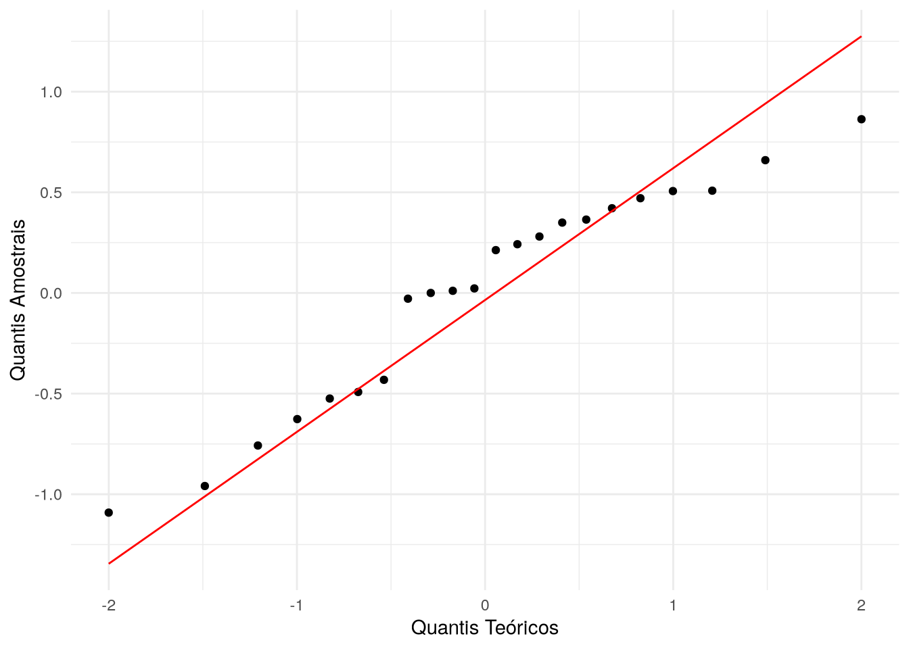
Como esperado pelo caráter discreto da variável resposta, os resíduos não se adequam muito bem à normalidade, mas parecem ter um comportamento melhor que o do modelo sobre retenção. Faremos o teste de Shapiro-Wilk para confirmar.
| Estatística | Valor-p |
|---|---|
| 0.9387 | 0.1864 |
Pelo valor \(p\) na Tabela 26, não rejeitamos a hipótese nula de normalidade dos resíduos a um nível de confiança de \(5\%\). Assim, seguemos com teste de Bartlett para homocedasticidade entre os grupos.
| Estatística | Valor-p |
|---|---|
| 1.5706 | 0.6661 |
O teste de Bartlett não rejeita a homocedasticidade. Dessa forma, não rejeitamos as suposições do modelo linear clássico para essa modelagem, mas temos ressalvas sobre os resíduos.
Análise de diferença entre grupos
Para fim didáticos, aplicaremos o ANOVA para verificar diferenças entre os grupos.
| Termo | Soma de Quadrados | Graus de Liberdade | Quadrado Médio | Valor F | Valor-p |
|---|---|---|---|---|---|
| Grupo | 3.4442 | 3 | 1.1481 | 2.3640 | 0.1185 |
| Grupo:Idade | 6.3289 | 4 | 1.5822 | 3.2580 | 0.0466 |
| Idade:Diagn | 7.1863 | 1 | 7.1863 | 14.7977 | 0.0020 |
| Residuals | 6.3133 | 13 | 0.4856 | NA | NA |
| R2 | R2 Ajustado |
|---|---|
| 0.7287 | 0.5618 |
Pela Tabela 28, não há diferença significativa entre os grupos no modelo para as notas na aplicação imediata. Pelo \(\bar{R}^2\), o modelo explica apenas \(56.18\%\) da variabilidade total das notas.
Métodos não paramétricos
Apesar de não rejeitarmos as suposições do modelo linear clássico, dada a natureza dos dados, optamos por ajustar um modelo não paramétrico para as notas na aplicação imediata através da permutação. Usaremos os mesmos efeitos fixos do modelo reduzido.
[1] "Settings: unique SS : numeric variables centered"
Call:
lmp(formula = Media_Imed ~ Grupo + Idade:Grupo + Diagn:Idade,
data = df_grupos)
Residuals:
Min 1Q Median 3Q Max
-1.32059 -0.56670 0.06026 0.73793 0.97917
Coefficients:
Estimate Iter Pr(Prob)
Grupo1 0.5779 5000 0.0010 ***
Grupo2 0.1411 189 0.3492
Grupo3 0.2897 5000 0.0066 **
GrupoBio-X1:Idade -0.2239 51 0.7647
GrupoBio-X2:Idade -0.5139 5000 0.0092 **
GrupoMat-X1:Idade -0.1101 51 0.8431
GrupoMat-X2:Idade -0.7737 5000 <2e-16 ***
Idade:Diagn 0.2209 5000 0.0104 *
---
Signif. codes: 0 '***' 0.001 '**' 0.01 '*' 0.05 '.' 0.1 ' ' 1
Residual standard error: 0.9657 on 13 degrees of freedom
Multiple R-Squared: 0.479, Adjusted R-squared: 0.1584
F-statistic: 1.494 on 8 and 13 DF, p-value: 0.2496 É interessante notar o baixíssimo valor de \(\bar{R}^2\) em apenas \(0.1584\) na Tabela 30, o que indica uma insuficiência do modelo.
Analysis of Variance Table
Response: Media_Imed
Df R Sum Sq R Mean Sq Iter Pr(Prob)
Grupo 3 5.5258 1.84193 5000 0.0038 **
GrupoBio-X1:Idade 4 7.4987 1.87468 5000 0.0066 **
Idade:Diagn 1 1.3753 1.37527 5000 0.0104 *
Residuals 13 12.1244 0.93265
---
Signif. codes: 0 '***' 0.001 '**' 0.01 '*' 0.05 '.' 0.1 ' ' 1Pela Tabela 30 e Tabela 31, observamos que não há efeito significativo do grupo na nota na aplicação imediata. Prosseguiremos com o teste de Kruskal-Wallis para confirmar esse resultado.
| Estatística | Valor-p |
|---|---|
| 2.6354 | 0.4513 |
Novamente, o teste de Kruskal-Wallis não rejeita a hipótese nula de que as amostras entre os grupos se originam da mesma distribuição. Logo, dizemos que não há diferenças significativas entre os grupos, mas, como dito, a análise pode ser prejudicada pela grande quantidade de empates na variável resposta. Dessa forma, estamos incertos sobre quais grupos diferem entre si, graças às limitações dos dados e técnicas de modelagem.
Conclusões da modelagem sobre as notas na aplicação imediata
A partir dos modelos ajustados, há indícios de que há diferenças significativas nas notas na aplicação imediata entre os diferentes tratamentos com os métodos utilizados. Apesar disso, não conseguimos identificar quais grupos diferem entre si, devido às limitações dos dados e técnicas de modelagem.
Prosseguríamos, como dito anteriormente, com a análise através de transformações ou o uso de modelos lineares generalizados que melhor se adequem à variável resposta discreta.
Modelagem das notas na Aplicação Tardia
Com a modelagem inconclusiva para a retenção e as notas na aplicação imediata, partimos para a modelagem das notas na aplicação tardia. Com isso, buscamos levantar considerações sobre diferenças entre tratamentos na memória de prazo longo [8]. Vamos repetir o processo como feito com a análise interior, levando em consideração as mesmas limitações.
Modelo linear simples
Ajustamos um modelo linear simples com efeitos fixos para a nota na aplicação tardia, idade, tópico e velocidade da apresentação, e interação entre idade e grupo, assim como diagnóstico e idade.
| Termo | Estimativa | Erro Padrão | Valor t | Valor-p |
|---|---|---|---|---|
| (Intercept) | 10.5402 | 9.6959 | 1.0871 | 0.2984 |
| Diagn | -5.3373 | 4.0513 | -1.3174 | 0.2123 |
| Idade | -0.3897 | 0.4592 | -0.8486 | 0.4127 |
| GrupoBio-X2 | 5.9001 | 10.7618 | 0.5482 | 0.5936 |
| GrupoMat-X1 | 14.8815 | 9.1861 | 1.6200 | 0.1312 |
| GrupoMat-X2 | 12.0877 | 10.1943 | 1.1857 | 0.2587 |
| Idade:GrupoBio-X2 | -0.3135 | 0.5171 | -0.6063 | 0.5556 |
| Idade:GrupoMat-X1 | -0.6236 | 0.4244 | -1.4695 | 0.1674 |
| Idade:GrupoMat-X2 | -0.5750 | 0.4941 | -1.1636 | 0.2672 |
| Diagn:Idade | 0.3134 | 0.1882 | 1.6653 | 0.1217 |
Nenhum dos coeficientes do modelo apresenta valor \(p\) significativo. Ainda assim, prosseguimos com a seleção das variáveis pelos testes \(t\), restando o modelo com grupo, interação idade-grupo e interação diagnóstico-idade. Dessa vez, pudemos manter o intercepto também.
| Termo | Estimativa | Erro Padrão | Valor t | Valor-p |
|---|---|---|---|---|
| (Intercept) | 1.5533 | 7.0825 | 0.2193 | 0.8298 |
| GrupoBio-X2 | 6.1325 | 11.0606 | 0.5544 | 0.5887 |
| GrupoMat-X1 | 17.6844 | 9.1856 | 1.9252 | 0.0764 |
| GrupoMat-X2 | 13.8744 | 10.3856 | 1.3359 | 0.2045 |
| GrupoBio-X1:Idade | 0.0223 | 0.3456 | 0.0646 | 0.9494 |
| GrupoBio-X2:Idade | -0.2957 | 0.3963 | -0.7463 | 0.4688 |
| GrupoMat-X1:Idade | -0.7188 | 0.2248 | -3.1980 | 0.0070 |
| GrupoMat-X2:Idade | -0.6226 | 0.3540 | -1.7587 | 0.1021 |
| Idade:Diagn | 0.0666 | 0.0183 | 3.6440 | 0.0030 |
Testaremos via ANOVA com um modelos reduzidos.
| Res.Df | RSS | Df | Sum of Sq | F | Pr(>F) |
|---|---|---|---|---|---|
| 18 | 29.83 | NA | NA | NA | NA |
| 13 | 13.51 | 5 | 16.32 | 3.141 | 0.0447 |
O modelo com interações é preferível ao modelo sem interações pela Tabela 35.
Partimos para o diagnóstico do modelo.
Diagnóstico do modelo linear simples
Primeiro, para análise dos resíduos.
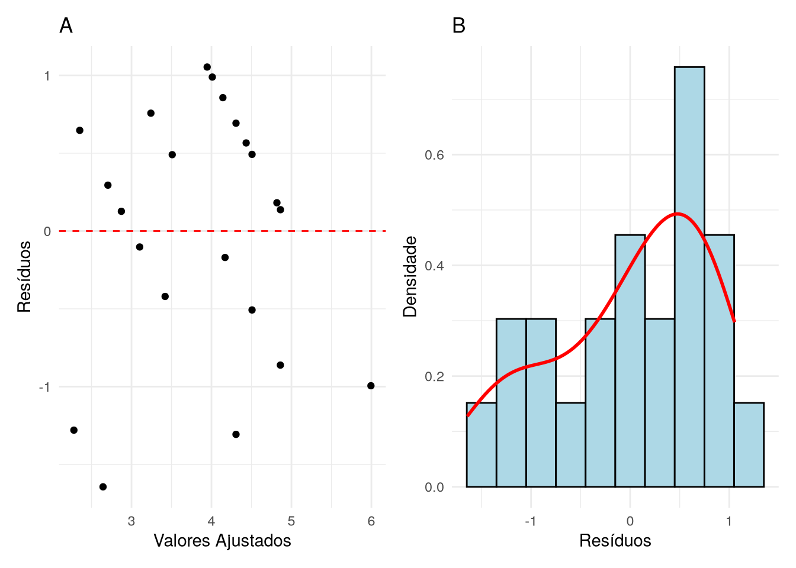
Os resíduos mostram-se demasiadamente positivos no gráfico A da Figura 14, com alguns valores muito negativos. O histograma do gráfico B aponta irregularidade. Faremos o teste de Levene para homocedasticidade.
| Estatística | Valor-p |
|---|---|
| 0.2798 | 0.8392 |
Pela Tabela 36, não rejeitamos a hipótese nula de homocedasticidade dos resíduos. Partimos para análise de normalidade.
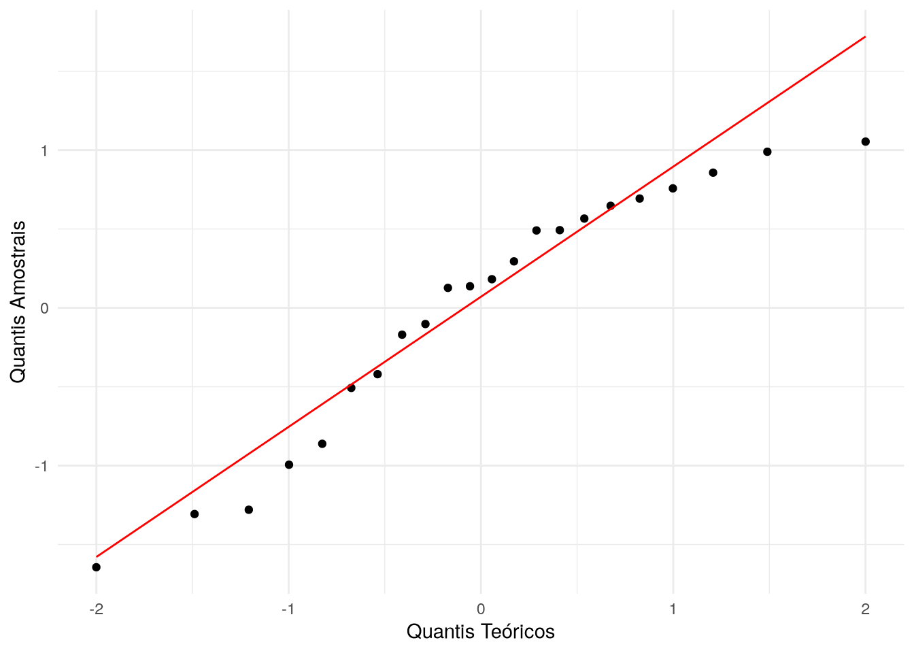
| Estatística | Valor-p |
|---|---|
| 0.9277 | 0.11 |
Novamente, não rejeitamos a hipótese nula de normalidade dos resíduos a um nível de confiança de \(5\%\). Assim, seguemos com teste de Bartlett para homocedasticidade entre os grupos.
| Estatística | Valor-p |
|---|---|
| 1.2423 | 0.7429 |
O teste de Bartlett não rejeita a homocedasticidade. Dessa forma, não rejeitamos as suposições do modelo linear clássico para essa modelagem. Seguimos com a análise.
Análise de diferença entre grupos
Aplicamos o ANOVA para verificar diferenças entre os grupos.
| Termo | Soma de Quadrados | Graus de Liberdade | Quadrado Médio | Valor F | Valor-p |
|---|---|---|---|---|---|
| Grupo | 2.7623 | 3 | 0.9208 | 0.8861 | 0.4740 |
| Grupo:Idade | 2.5203 | 4 | 0.6301 | 0.6063 | 0.6651 |
| Idade:Diagn | 13.7989 | 1 | 13.7989 | 13.2786 | 0.0030 |
| Residuals | 13.5094 | 13 | 1.0392 | NA | NA |
Pela Tabela 39, não há diferença significativa entre os grupos no modelo para as notas na aplicação tardia. Partiremos para métodos não paramétricos por desconfiança dos resíduos.
Métodos não paramétricos
Apesar de não rejeitarmos as suposições do modelo linear clássico, dada a natureza dos dados, optamos por ajustar um modelo não paramétrico para as notas na aplicação tardia através da permutação. Usaremos os mesmos efeitos fixos do modelo reduzido.
[1] "Settings: unique SS : numeric variables centered"
Call:
lmp(formula = Media_Semn ~ Grupo + Idade:Grupo + Diagn:Idade,
data = df_grupos)
Residuals:
Min 1Q Median 3Q Max
-2.0874 -0.8656 0.2000 0.8316 1.7176
Coefficients:
Estimate Iter Pr(Prob)
Grupo1 0.4708 5000 0.0058 **
Grupo2 -0.4568 5000 0.0054 **
Grupo3 0.1916 51 0.7059
GrupoBio-X1:Idade -0.2845 51 0.8039
GrupoBio-X2:Idade -0.2397 51 0.7059
GrupoMat-X1:Idade -0.2807 5000 0.0018 **
GrupoMat-X2:Idade -0.3171 5000 0.0054 **
Idade:Diagn 0.3910 5000 0.0052 **
---
Signif. codes: 0 '***' 0.001 '**' 0.01 '*' 0.05 '.' 0.1 ' ' 1
Residual standard error: 1.33 on 13 degrees of freedom
Multiple R-Squared: 0.2944, Adjusted R-squared: -0.1399
F-statistic: 0.6778 on 8 and 13 DF, p-value: 0.7038 Analysis of Variance Table
Response: Media_Semn
Df R Sum Sq R Mean Sq Iter Pr(Prob)
Grupo 3 2.0777 0.6926 5000 0.0078 **
GrupoBio-X1:Idade 4 4.1458 1.0365 5000 0.0088 **
Idade:Diagn 1 4.3106 4.3106 5000 0.0052 **
Residuals 13 22.9977 1.7691
---
Signif. codes: 0 '***' 0.001 '**' 0.01 '*' 0.05 '.' 0.1 ' ' 1Novamente, identificamos pela Tabela 40 e Tabela 41 que há efeito significativo do grupo na nota na aplicação tardia. Prosseguiremos com o teste de Kruskal-Wallis para as diferenças entre grupos.
| Estatística | Valor-p |
|---|---|
| 1.0341 | 0.793 |
Mais uma vez, o teste de Kruskal-Wallis não rejeita a hipótese nula de que as amostras entre os grupos se originam da mesma distribuição. Acreditamos que, nesse caso, o teste de Kruskal-Wallis é menos confiável que o ANOVA do método de permutação. Assim como na modelagem da retenção e das notas na aplicação imediata, pode ser que pela variabilidade distinta entre os grupos observadas na análise descritiva (Tabela 3), a análise do método com permutação seja inválida. Pode ser também que o teste de KW tenha pouca adequação pela grande quantidade de empates na variável resposta. Prosseguiremos mesmo assim com a análise post-hoc. Usaremos o teste post-hoc de Dunn para identificar quais grupos diferem entre si.
| Comparação | Estatística | Valor-p ajustado |
|---|---|---|
| Bio-X1 - Bio-X2 | 0.9739 | 1 |
| Bio-X1 - Mat-X1 | 0.6691 | 1 |
| Bio-X2 - Mat-X1 | -0.2822 | 1 |
| Bio-X1 - Mat-X2 | 0.4474 | 1 |
| Bio-X2 - Mat-X2 | -0.4875 | 1 |
| Mat-X1 - Mat-X2 | -0.2053 | 1 |
Pelo resultado do teste de Dunn na Tabela 43, não há diferenças significativas entre os grupos, mas, como dito, a análise pode ser prejudicada pela grande quantidade de empates na variável resposta. Dessa forma, estamos incertos sobre quais grupos diferem entre si, graças às limitações dos dados e técnicas de modelagem.
Conclusões da modelagem sobre as notas na aplicação tardia
A partir dos modelos ajustados, há indícios de que há diferenças significativas nas notas na aplicação tardia entre os diferentes tratamentos com os métodos utilizados. Apesar disso, não conseguimos identificar quais grupos diferem entre si, devido às limitações dos dados e técnicas de modelagem.
Prosseguríamos, como dito anteriormente, com a análise através de transformações ou o uso de modelos lineares generalizados que melhor se adequem à variável resposta discreta.
Conclusões Gerais
A modelagem estatística realizada não permitiu conclusões definitivas sobre os efeitos dos diferentes tratamentos na retenção e nas notas em aplicações imediata e tardia. Embora algumas análises indiquem diferenças significativas entre os grupos, como a Tabela 41, as limitações inerentes aos dados e às técnicas de modelagem utilizadas impediram a identificação clara de quais grupos diferem entre si. Futuras análises poderiam explorar transformações dos dados ou a aplicação de modelos lineares generalizados para melhor capturar a natureza discreta das variáveis resposta.
Outro fator importante a se considerar são limitações do próprio estudo, como tamanho amostral reduzido e possíveis vieses na coleta de dados, que podem ter influenciado os resultados obtidos.
No geral, podemos concluir que, desse experimento, não há evidências robustas para afirmar que combinações específicas entre conteúdo e velocidade de reprodução tem efeito significativo na retenção de informação ou no desempenho em avaliações imediatas e tardias. Recomenda-se cautela na interpretação dos resultados e a realização de estudos adicionais com amostras maiores e metodologias aprimoradas para elucidar melhor os efeitos dos tratamentos avaliados.
Também, enquanto a velocidade individualmente já foi analisada por diversos estudos, assim como a análise individual do “conteúdo do vídeo”, poucos estudos foram feitos sobre a combinação desses dois fatores. Portanto, este é um primeiro passo importante para futuras pesquisas na área de aprendizagem através de vídeos educacionais.
Se quiser levar uma conclusão divertida, pela Tabela 11, matemática é mais fácil para alunos de exatas que biologia a uma significância de \(5\%\).
Referências
Referências
[1]
D. H. Murphy, K. M. Hoover, K. Agadzhanyan, J. C. Kuehn, e A. D. Castel, “Learning in double time: The effect of lecture video speed on immediate and delayed comprehension”, Applied Cognitive Psychology, vol. 36, nº 1, p. 69–82, 2022, doi: 10.1002/acp.3899. Disponível em: https://onlinelibrary.wiley.com/doi/abs/10.1002/acp.3899. [Acessado: 27 de outubro de 2025]
[2]
D. H. Murphy, K. M. Hoover, e A. D. Castel, “The Effect of Video Playback Speed on Learning and Mind-Wandering in Younger and Older Adults”, Memory (Hove, England), vol. 31, nº 6, p. 802–817, jul. 2023, doi: 10.1080/09658211.2023.2198326. Disponível em: https://pmc.ncbi.nlm.nih.gov/articles/PMC10330257/. [Acessado: 27 de outubro de 2025]
[3]
T. Tharumalingam, B. R. T. Roberts, J. M. Fawcett, e E. F. Risko, “Increasing Video Lecture Playback Speed Can Impair Test Performance – a Meta-Analysis”, Educational Psychology Review, vol. 37, nº 2, p. 35, abr. 2025, doi: 10.1007/s10648-025-10003-9. Disponível em: https://doi.org/10.1007/s10648-025-10003-9. [Acessado: 27 de outubro de 2025]
[4]
M. M. McIntyre, J. L. Gundlach, e W. G. Graziano, “Liking guides learning: The role of interest in memory for STEM topics”, Learning and Individual Differences, vol. 85, p. 101960, jan. 2021, doi: 10.1016/j.lindif.2020.101960. Disponível em: https://www.sciencedirect.com/science/article/pii/S1041608020301400. [Acessado: 28 de outubro de 2025]
[5]
W. Leahy e J. Sweller, “Cognitive load theory, modality of presentation and the transient information effect”, Applied Cognitive Psychology, vol. 25, nº 6, p. 943–951, 2011, doi: 10.1002/acp.1787. Disponível em: https://onlinelibrary.wiley.com/doi/abs/10.1002/acp.1787. [Acessado: 28 de outubro de 2025]
[6]
E. Foulke e T. G. Sticht, “Review of research on the intelligibility and comprehension of accelerated speech”, Psychological Bulletin, vol. 72, nº 1, p. 50–62, jul. 1969, doi: 10.1037/h0027575
[7]
R. C. Atkinson e R. M. Shiffrin, “Human Memory: A Proposed System and its Control Processes”, em Psychology of Learning and Motivation, K. W. Spence e J. T. Spence, Orgs., Academic Press, 1968, p. 89–195. doi: 10.1016/S0079-7421(08)60422-3. Disponível em: https://www.sciencedirect.com/science/article/pii/S0079742108604223. [Acessado: 29 de outubro de 2025]
[8]
J. Kamiński, “Intermediate-Term Memory as a Bridge between Working and Long-Term Memory”, The Journal of Neuroscience, vol. 37, nº 20, p. 5045–5047, 2017, doi: 10.1523/JNEUROSCI.0604-17.2017. Disponível em: https://pmc.ncbi.nlm.nih.gov/articles/PMC6596466/. [Acessado: 29 de outubro de 2025]